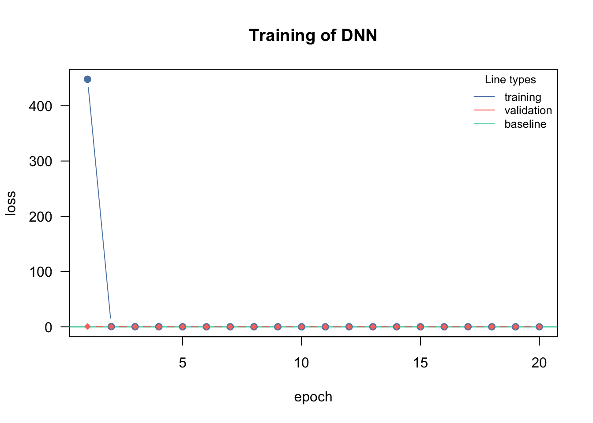
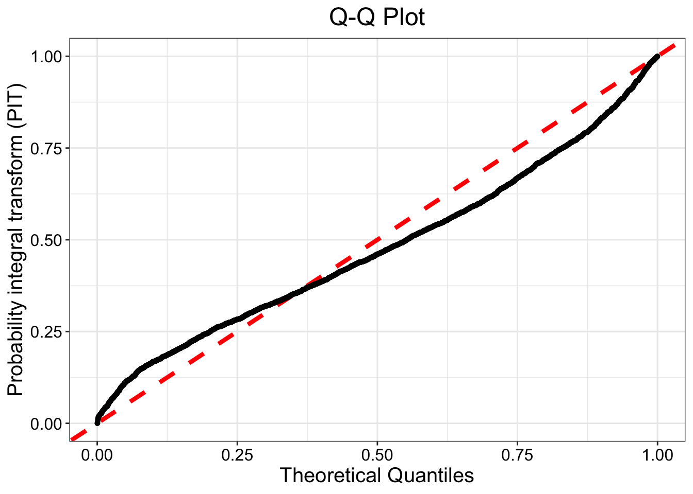
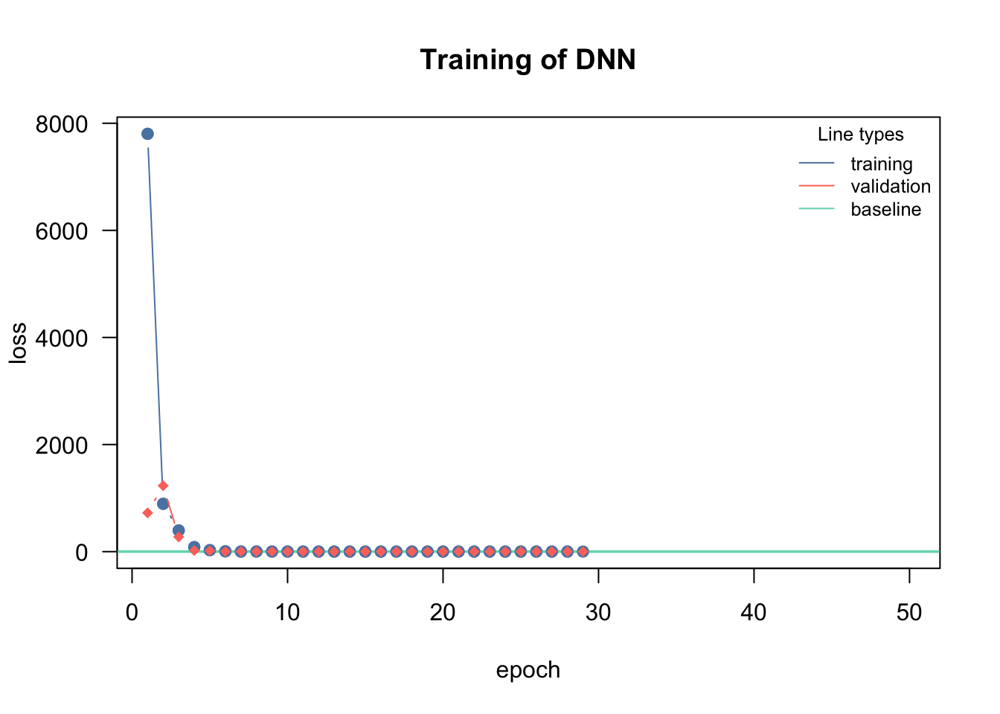

Week 3 - Assignment 3: Model Comparison Australia Electricity Demand
Author
Group 2: Carlos, Landon, and Elias.
Published
June 14, 2026
Introduction
Basics and setup
The goal of this assignment is to compare three different models for estimating the median and 95th percentile of electricity consumption:
The Normal distribution model from Assignment 2 (reuse results from Assignment 2)
A quantile regression (QR) model which simultaneously estimates both quantiles
The estimate of the quantiles from SPQR
The data processing pipeline is identical from Assignment 2.
Code
rm(list =ls())data("AUDem", package ="qgam")meanDem <- AUDem$meanDemlibrary(lubridate) # need this for date-time tinkeringmonths <-month(meanDem$date) #might throw warnings, can be ignoredyears <-year(meanDem$date) #might throw warnings, can be ignoredY <- meanDem$dem
The quantile regression loss function is:
Code
library(torch); library(cito); library(SPQR)q2 =torch_tensor(0.5)q3 =torch_tensor(0.95)loss_func =function(pred, true,...) { l2 =torch_max(q2*(true[,1,drop=FALSE]-pred[,1,drop=FALSE]), other = (1.0-q2)*(pred[,1,drop=FALSE]-true[,1,drop=FALSE])) l3 =torch_max(q3*(true[,2,drop=FALSE]-pred[,2,drop=FALSE]), other = (1.0-q3)*(pred[,2,drop=FALSE]-true[,2,drop=FALSE]))return(l2+l3)}
The QR loss is the same one from last week, but I dropped the lowest quantile from it. Covariate cleanup as before:
Code
X <- meanDem[,c(2,5,7)]X <-cbind(X,months,years)dem_df <-cbind(Y,X)
Question 1 - Fitting models
Fit \(Y\sim .\) using QR and SPQR defined above. You should be able to scrounge together code for both models from what we covered in class. Guidelines for each model:
Have at least\(0.2\) validation split in each case
No need to have a separate test set
For QR - use the training/validation loss as the metric for choosing your final model
For SPQR - you can use the loss as the metric, but you can also use the plotGOF function to assess goodness of fit.
Example for SPQR
Code
library(SPQR)control <-list(epochs =300, lr =0.001, batch.size =100)spqr_fit <-SPQR(X = X, Y = Y, method ='MLE', normalize = T, n.hidden =c(50,50), activation ='relu', verbose = F, control = control, seed =303)#summary(spqr_fit)#plotGOF(spqr_fit)
Question 2 - Getting predictions
Do the following steps for each of your models:
Subset the data for December. Let’s just compare the summer data.
Get predictions for each model for each season. There should therefore be 2 different prediction dataframes. Save them as qr_12 and spqr_12.
Question 3 - Getting quantiles
The way you get quantiles for each model will be different. I will give the broad outline of the process below for both models.
QR
You should have 2 columns in the predictions for each month - the first column will correspond to the median, the second will correspond to the the 0.95 quantile. You can save your eventual outputs as qr_12_50, qr_12_95.
SPQR
The predict function will give you a dataframe with 2 columns, just like for QR
Code
spqr_pred <-predict(spqr_fit, X =as.matrix(X), type ='QF', tau =c(0.50,0.95))dim(spqr_pred)
Note how I needed to use as.matrix in the predict statement but not in the fit statement. That’s a bug, not a feature. Separate out the 2 colums in 2 different vectors - spqr_12_50, spqr_12_95.
Question 4 - Model comparison
Import in your predictions from Assignment 2. You can either do it using the load function, or by going to the environment tab and use the “load workspace” option.
We will do a total of 6 tests (3 methods x 2 quantile levels). Use wilcox.test as before with the following options
x and y vectors
paired = T
alternative = 'two.sided'
What should be in the final submission?
Report the:
Final architectures you chose for each model
A table for the median, and a table for the 0.95 quantile. Each table should have the form:
Gaussian
QR
SPQR
Gaussian
X
QR
X
SPQR
X
The diagonals will be empty. The off diagonals will have the p-values from the tests.
Answer 1 - Fitting models
Quantile Regression with Train/Validation Loss. Denoted as Model 2 (m2)
Loss at epoch 1: training: 448.005, validation: 0.574, lr: 0.01000

Loss at epoch 2: training: 0.400, validation: 0.254, lr: 0.01000
Loss at epoch 3: training: 0.184, validation: 0.129, lr: 0.01000
Loss at epoch 4: training: 0.105, validation: 0.079, lr: 0.01000
Loss at epoch 5: training: 0.067, validation: 0.062, lr: 0.01000
Loss at epoch 6: training: 0.060, validation: 0.060, lr: 0.01000
Loss at epoch 7: training: 0.059, validation: 0.059, lr: 0.01000
Loss at epoch 8: training: 0.058, validation: 0.058, lr: 0.01000
Loss at epoch 9: training: 0.057, validation: 0.057, lr: 0.01000
Loss at epoch 10: training: 0.056, validation: 0.056, lr: 0.01000
Loss at epoch 11: training: 0.055, validation: 0.055, lr: 0.01000
Loss at epoch 12: training: 0.054, validation: 0.054, lr: 0.01000
Loss at epoch 13: training: 0.053, validation: 0.053, lr: 0.01000
Loss at epoch 14: training: 0.052, validation: 0.053, lr: 0.01000
Loss at epoch 15: training: 0.051, validation: 0.052, lr: 0.01000
Loss at epoch 16: training: 0.050, validation: 0.051, lr: 0.01000
Loss at epoch 17: training: 0.050, validation: 0.050, lr: 0.01000
Loss at epoch 18: training: 0.049, validation: 0.050, lr: 0.01000
Loss at epoch 19: training: 0.048, validation: 0.049, lr: 0.01000
Loss at epoch 20: training: 0.047, validation: 0.048, lr: 0.01000
The model’s loss falls steeply within as few as the first 10 epochs, so it stands to reason that we do not need that many epochs.
Using SPQR, denoted as model 3 (m3):
Code
control <-list(epochs =300, lr =0.001, batch.size =100, valid.pct =0.2)m3 <-SPQR(X = X, Y = Y, method ='MLE', normalize = T, n.hidden =c(50,50),activation ='relu', verbose = F, control = control, seed =303)
Assessing SPQR model’s goodness of fit:
Code
plotGOF(m3)
Warning: Using `size` aesthetic for lines was deprecated in ggplot2 3.4.0.
ℹ Please use `linewidth` instead.
ℹ The deprecated feature was likely used in the SPQR package.
Please report the issue at <https://github.com/stevengxu/SPQR/issues>.

The shape of the QQ-plot suggests that the model fit the data reasonably well, in spite of a small “S” shape in the data points.
Answer 2 - Getting Predictions
Predictions:
Code
dem12 <- dem_df[months ==12,]
Code
qr_12 <-predict(m2,dem12[,-1]) # QR approachspqr_12 <-predict(m3, X =as.matrix(dem12[,-1]), type ="QF", tau =c(0.50,0.95)) # SPQR approach
Note: Loading Gaussian model from Assignment 2 (I will load the whole model specification, but the predictions should be saved on the second assignment and then imported here as an object).
Importing the results from Assignment 2 as objects:
Code
# load the results from Assignment 2load('Assignment2_results.RData')# Model 1 loss functiongaussian_nll =function(pred, true, ...) { loss =-torch::distr_normal(pred, scale = torch::torch_exp(scale_par))$log_prob(true)return(loss$mean())}m1 <- cito::dnn( Y ~ ., data = dem_df,loss = gaussian_nll,epochs =50,verbose = F,validation =0.2,custom_parameters =list(scale_par =0.0),activation ="relu",optimizer ='adam')
## Model 1 loss functiongaussian_nll =function(pred, true, ...) { loss =-torch::distr_normal(pred, scale = torch::torch_exp(scale_par))$log_prob(true)return(loss$mean())}m1 <- cito::dnn( Y ~ ., data = dem_df,loss = gaussian_nll,epochs =50,verbose = F,validation =0.2,custom_parameters =list(scale_par =0.0),activation ="relu",optimizer ='adam')

Code
gaussian_12 <-predict(m1, dem12[,-1])gaussian_12_50 <-c(gaussian_12)# Generating 0.95 quantile predictions with the estimated# Gaussian parameters from the modelgaussian_12_95 <-c(qnorm(0.95, mean = gaussian_12, sd =exp(m1$parameter$scale_par)))
Model comparisons:
Code
# Gaussian - QR Dec 50wilcox.test(x = gaussian_12_50, y = qr_12_50, alternative ='two.sided', paired = T)
Wilcoxon signed rank test with continuity correction
data: gaussian_12_50 and qr_12_50
V = 39034, p-value < 2.2e-16
alternative hypothesis: true location shift is not equal to 0
Code
# Gaussian - QR Dec 95wilcox.test(x = gaussian_12_95, y = qr_12_95, alternative ='two.sided', paired = T)
Wilcoxon signed rank test with continuity correction
data: gaussian_12_95 and qr_12_95
V = 39060, p-value < 2.2e-16
alternative hypothesis: true location shift is not equal to 0
Code
# Gaussian - SPQR Dec 50wilcox.test(x = gaussian_12_50, y = spqr_12_50, alternative ='two.sided', paired = T)
Wilcoxon signed rank test with continuity correction
data: gaussian_12_50 and spqr_12_50
V = 39003, p-value < 2.2e-16
alternative hypothesis: true location shift is not equal to 0
Code
# Gaussian - SPQR Dec 95wilcox.test(x = gaussian_12_95, y = spqr_12_95, alternative ='two.sided', paired = T)
Wilcoxon signed rank test with continuity correction
data: gaussian_12_95 and spqr_12_95
V = 39060, p-value < 2.2e-16
alternative hypothesis: true location shift is not equal to 0
Code
# QR - SPQR Dec 50wilcox.test(x = qr_12_50, y = spqr_12_50, alternative ='two.sided', paired = T)
Wilcoxon signed rank test with continuity correction
data: qr_12_50 and spqr_12_50
V = 38119, p-value < 2.2e-16
alternative hypothesis: true location shift is not equal to 0
Code
# QR - SPQR Dec 95wilcox.test(x = qr_12_95, y = spqr_12_95, alternative ='two.sided', paired = T)
Wilcoxon signed rank test with continuity correction
data: qr_12_95 and spqr_12_95
V = 39060, p-value < 2.2e-16
alternative hypothesis: true location shift is not equal to 0
The test results suggest that, for both the median and the 0.95 quantile, the Gaussian, QR and SPQR predictions differ statistically from each other.
Final deliverables
Median p-values:
Gaussian
QR
SPQR
Gaussian
X
2.2e-16
2.2e-16
QR
2.2e-16
X
2.2e-16
SPQR
2.2e-16
2.2e-16
X
0.95 quantile p-values:
Gaussian
QR
SPQR
Gaussian
X
2.2e-16
2.2e-16
QR
2.2e-16
X
2.2e-16
SPQR
2.2e-16
2.2e-16
X
Source Code
---title: "University of Arkansas STAT6393V - Week 3"subtitle: "Week 3 - Assignment 3: Model Comparison Australia Electricity Demand"author: "Group 2: Carlos, Landon, and Elias."date: 2026-06-14format: html: papersize: letter fontsize: 11pt geometry: margin=1in number-sections: true toc: false pdf: pdf-engine: xelatex embed-resources: true papersize: letter fontsize: 11pt geometry: margin=1in number-sections: true toc: false include-in-header: text: | \usepackage{fvextra} \usepackage{xurl} \fvset{breaklines=true,breakanywhere=true} \setlength{\emergencystretch}{3em} \sloppy---:::{.callout-note collapse="true"}## Introduction**Basics and setup** The goal of this assignment is to compare three different models for estimating the median and 95th percentile of electricity consumption:1. The Normal distribution model from Assignment 2 (reuse results from Assignment 2)2. A quantile regression (QR) model which simultaneously estimates both quantiles3. The estimate of the quantiles from SPQRThe data processing pipeline is identical from Assignment 2.```{r, echo=T, warning=F, message=F}rm(list =ls())data("AUDem", package ="qgam")meanDem <- AUDem$meanDemlibrary(lubridate) # need this for date-time tinkeringmonths <-month(meanDem$date) #might throw warnings, can be ignoredyears <-year(meanDem$date) #might throw warnings, can be ignoredY <- meanDem$dem```The quantile regression loss function is:```{r}library(torch); library(cito); library(SPQR)q2 =torch_tensor(0.5)q3 =torch_tensor(0.95)loss_func =function(pred, true,...) { l2 =torch_max(q2*(true[,1,drop=FALSE]-pred[,1,drop=FALSE]), other = (1.0-q2)*(pred[,1,drop=FALSE]-true[,1,drop=FALSE])) l3 =torch_max(q3*(true[,2,drop=FALSE]-pred[,2,drop=FALSE]), other = (1.0-q3)*(pred[,2,drop=FALSE]-true[,2,drop=FALSE]))return(l2+l3)}```The QR loss is the same one from last week, but I dropped the lowest quantile from it. Covariate cleanup as before:```{r}X <- meanDem[,c(2,5,7)]X <-cbind(X,months,years)dem_df <-cbind(Y,X)```**Question 1 - Fitting models**Fit $Y\sim .$ using QR and SPQR defined above. You should be able to scrounge together code for both models from what we covered in class. Guidelines for each model:1. Have *at least* $0.2$ validation split in each case2. No need to have a separate test set3. For QR - use the training/validation loss as the metric for choosing your final model4. For SPQR - you can use the loss as the metric, but you can also use the `plotGOF` function to assess goodness of fit.**Example for SPQR**```{r, eval=FALSE}library(SPQR)control <-list(epochs =300, lr =0.001, batch.size =100)spqr_fit <-SPQR(X = X, Y = Y, method ='MLE', normalize = T, n.hidden =c(50,50), activation ='relu', verbose = F, control = control, seed =303)#summary(spqr_fit)#plotGOF(spqr_fit)```**Question 2 - Getting predictions**Do the following steps for each of your models:1. Subset the data for December. Let's just compare the summer data.2. Get predictions for each model for each season. There should therefore be 2 different prediction dataframes. Save them as `qr_12` and `spqr_12`.**Question 3 - Getting quantiles**The way you get quantiles for each model will be different. I will give the broad outline of the process below for both models.- **QR**You should have 2 columns in the predictions for each month - the first column will correspond to the median, the second will correspond to the the 0.95 quantile. You can save your eventual outputs as `qr_12_50, qr_12_95`.- **SPQR**The predict function will give you a dataframe with 2 columns, just like for QR```{r, eval=FALSE}spqr_pred <-predict(spqr_fit, X =as.matrix(X), type ='QF', tau =c(0.50,0.95))dim(spqr_pred)```Note how I needed to use `as.matrix` in the predict statement but not in the `fit` statement. That's a bug, not a feature. Separate out the 2 colums in 2 different vectors - `spqr_12_50, spqr_12_95`.**Question 4 - Model comparison**Import in your predictions from Assignment 2. You can either do it using the `load` function, or by going to the environment tab and use the "load workspace" option.We will do a total of 6 tests (3 methods x 2 quantile levels). Use `wilcox.test` as before with the following options1. `x` and `y` vectors2. `paired = T`3. `alternative = 'two.sided'`**What should be in the final submission?**Report the:1. Final architectures you chose for each model2. A table for the median, and a table for the 0.95 quantile. Each table should have the form:|| Gaussian | QR | SPQR ||--------------|----------|-----|------|| **Gaussian** | X |||| **QR** || X ||| **SPQR** ||| X |The diagonals will be empty. The off diagonals will have the p-values from the tests.::::::{.callout-note collapse="true"}## Answer 1 - Fitting models**Quantile Regression with Train/Validation Loss. Denoted as Model 2 (m2)** ```{r, warning=F, message=F}m2 <- cito::dnn(cbind(Y,Y)~., data = dem_df,lr =0.01,validation =0.2,loss = loss_func,lambda =0.000, alpha =0.5,epochs =20L, hidden =c(30L, 30L),activation ="relu", verbose =TRUE, plot =TRUE)```The model's loss falls steeply within as few as the first 10 epochs, so it stands to reason that we do not need that many epochs.Using SPQR, denoted as model 3 (m3):```{r}control <-list(epochs =300, lr =0.001, batch.size =100, valid.pct =0.2)m3 <-SPQR(X = X, Y = Y, method ='MLE', normalize = T, n.hidden =c(50,50),activation ='relu', verbose = F, control = control, seed =303)```Assessing SPQR model's goodness of fit:```{r}plotGOF(m3)```The shape of the QQ-plot suggests that the model fit the data reasonably well, in spite of a small "S" shape in the data points.::::::{.callout-note collapse="true"}## Answer 2 - Getting Predictions**Predictions:**```{r}dem12 <- dem_df[months ==12,]``````{r}qr_12 <-predict(m2,dem12[,-1]) # QR approachspqr_12 <-predict(m3, X =as.matrix(dem12[,-1]), type ="QF", tau =c(0.50,0.95)) # SPQR approach```::::::{.callout-note collapse="true"}## Answer 3 - Getting Quantiles50% and 95% quantiles for QR:```{r}qr_12_50 <- qr_12[,1]qr_12_95 <- qr_12[,2]```50% and 95% quantiles for SPQR:```{r}spqr_12_50 <- spqr_12[,1]spqr_12_95 <- spqr_12[,2]```::::::{.callout-note collapse="true"}## Answer 4 - Model ComparisonNote: Loading Gaussian model from Assignment 2 (I will load the whole model specification, but the predictions should be saved on the second assignment and then imported here as an object).Importing the results from Assignment 2 as objects:```{r}# load the results from Assignment 2load('Assignment2_results.RData')# Model 1 loss functiongaussian_nll =function(pred, true, ...) { loss =-torch::distr_normal(pred, scale = torch::torch_exp(scale_par))$log_prob(true)return(loss$mean())}m1 <- cito::dnn( Y ~ ., data = dem_df,loss = gaussian_nll,epochs =50,verbose = F,validation =0.2,custom_parameters =list(scale_par =0.0),activation ="relu",optimizer ='adam')gaussian_12 <-predict(m1, dem12[,-1])gaussian_12_50 <-c(gaussian_12)``````{r}## Model 1 loss functiongaussian_nll =function(pred, true, ...) { loss =-torch::distr_normal(pred, scale = torch::torch_exp(scale_par))$log_prob(true)return(loss$mean())}m1 <- cito::dnn( Y ~ ., data = dem_df,loss = gaussian_nll,epochs =50,verbose = F,validation =0.2,custom_parameters =list(scale_par =0.0),activation ="relu",optimizer ='adam')gaussian_12 <-predict(m1, dem12[,-1])gaussian_12_50 <-c(gaussian_12)# Generating 0.95 quantile predictions with the estimated# Gaussian parameters from the modelgaussian_12_95 <-c(qnorm(0.95, mean = gaussian_12, sd =exp(m1$parameter$scale_par)))```Model comparisons:```{r}# Gaussian - QR Dec 50wilcox.test(x = gaussian_12_50, y = qr_12_50, alternative ='two.sided', paired = T)# Gaussian - QR Dec 95wilcox.test(x = gaussian_12_95, y = qr_12_95, alternative ='two.sided', paired = T)# Gaussian - SPQR Dec 50wilcox.test(x = gaussian_12_50, y = spqr_12_50, alternative ='two.sided', paired = T)# Gaussian - SPQR Dec 95wilcox.test(x = gaussian_12_95, y = spqr_12_95, alternative ='two.sided', paired = T)# QR - SPQR Dec 50wilcox.test(x = qr_12_50, y = spqr_12_50, alternative ='two.sided', paired = T)# QR - SPQR Dec 95wilcox.test(x = qr_12_95, y = spqr_12_95, alternative ='two.sided', paired = T)```The test results suggest that, for both the median and the 0.95 quantile, the Gaussian, QR and SPQR predictions differ statistically from each other.**Final deliverables**Median p-values:|| Gaussian | QR | SPQR ||--------------|----------|---------|--------|| **Gaussian** | X | 2.2e-16 | 2.2e-16|| **QR** | 2.2e-16 | X | 2.2e-16|| **SPQR** | 2.2e-16 | 2.2e-16 | X |0.95 quantile p-values:|| Gaussian | QR | SPQR ||--------------|----------|---------|--------|| **Gaussian** | X | 2.2e-16 | 2.2e-16|| **QR** | 2.2e-16 | X | 2.2e-16|| **SPQR** | 2.2e-16 | 2.2e-16 | X |:::